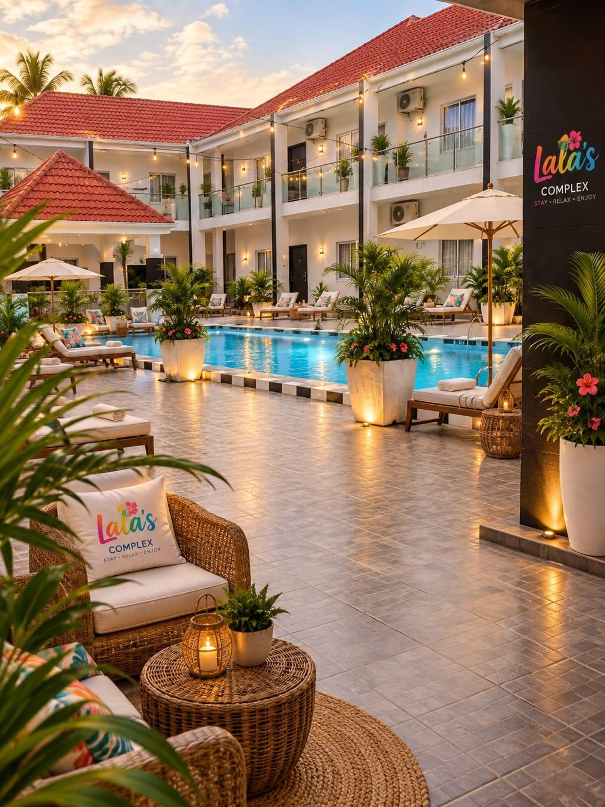
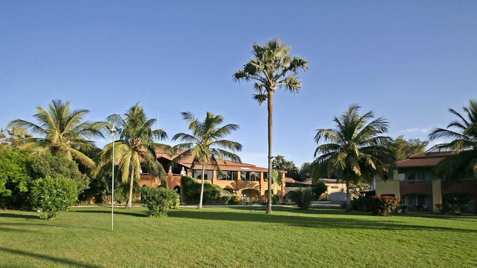
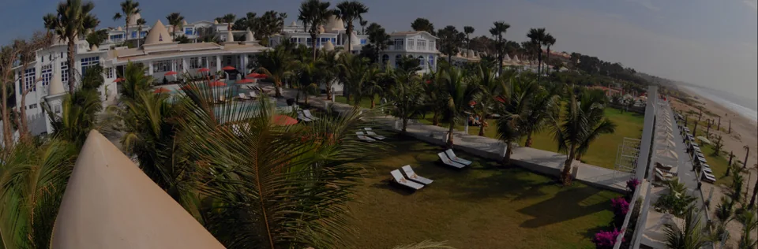
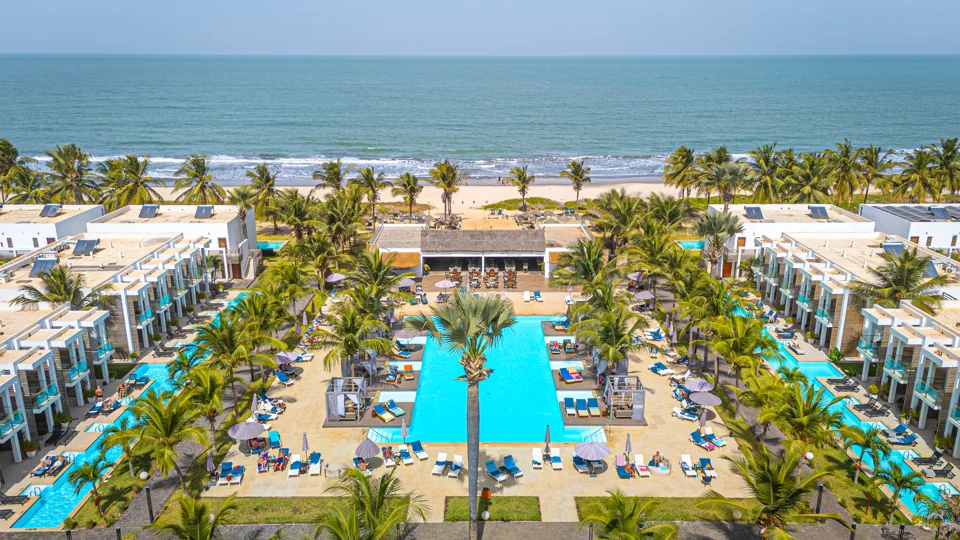
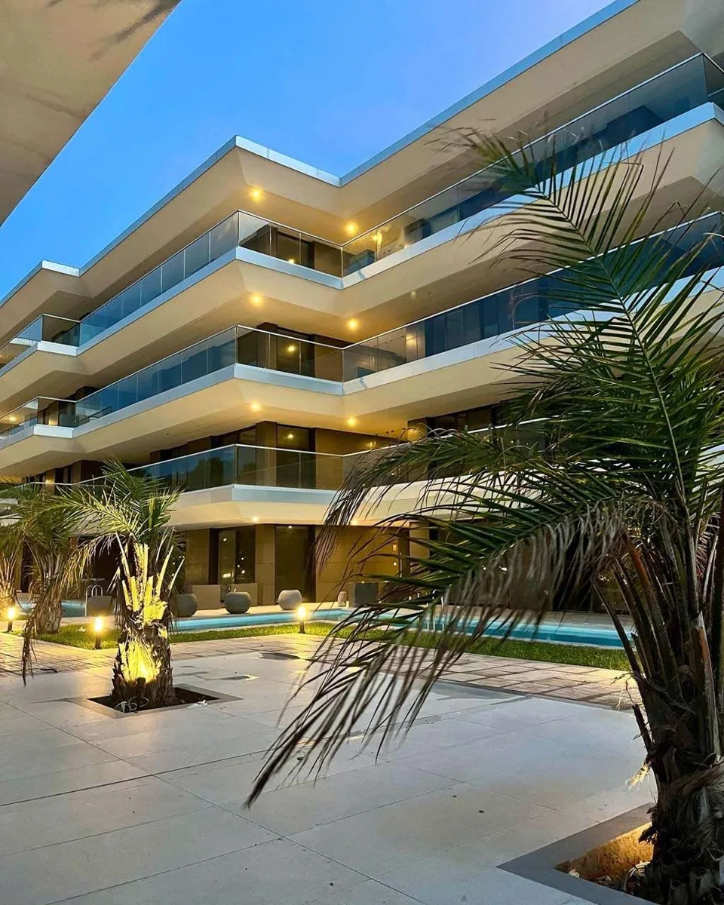
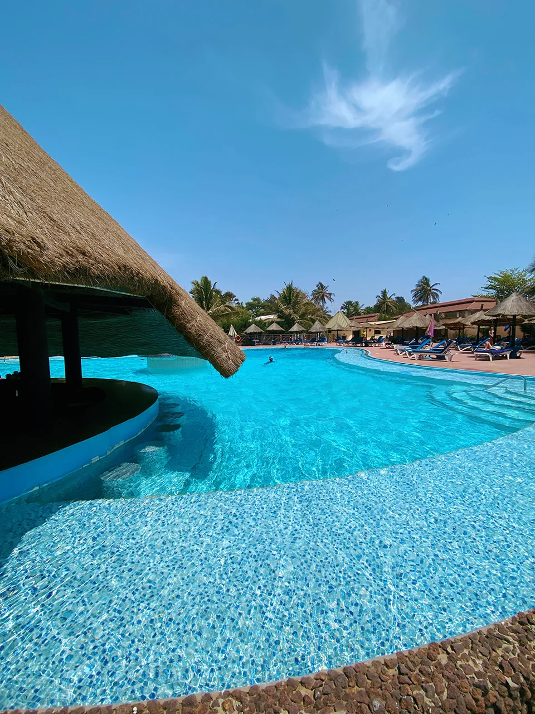

Brufut, The Gambia
Lala’s Complex
Poolside apartments, space to settle in and a comfortable base for your Gambian adventure. Choose a studio or an apartment with up to four bedrooms.
- Pool
- Wi-Fi
- A/C
From €35per apartment / night
Explore stay
A good stay. A great starting point.
Choose your base with people who know your destination. Comfortable accommodation, personal booking support and private tours from your doorstep.
Find your stayFrom a short coastal escape to a longer stay, find the space that fits your holiday.
Poolside apartments, space to settle in and a comfortable base for your Gambian adventure. Choose a studio or an apartment with up to four bedrooms.

GambianTour recommendsSlow down among tropical gardens on Kololi Beach. Kairaba combines rooms and suites with outdoor pools, dining and a peaceful coastal setting.

GambianTour recommendsWhite domes, Moorish-inspired architecture and gardens leading to the Atlantic. Coco Ocean pairs a boutique resort setting with a spa, suites and villas.

GambianTour recommendsAn adults-only stay right on Kotu Beach, with a large pool, contemporary rooms and selected swim-up options. A good match for relaxed days by the ocean.

GambianTour recommendsModern studios and one- or two-bedroom apartments with kitchens, balconies or terraces. Enjoy beachfront living with an ocean-view infinity pool and Bistro Sands.
 GambianTour recommends
GambianTour recommendsA leafy beachfront resort with self-catering studios, apartments, townhouses and villas. Pools, dining and garden spaces make it an inviting base for a longer holiday.

GambianTour recommendsAn established beachfront hotel with extensive gardens, pools, restaurants and bars. Its Kololi location puts the Senegambia Strip’s restaurants and craft market close by.
Hotel details are based on the properties’ official websites. Ask us to confirm current facilities, room options, meal plans and availability for your dates.
Tell us your dates, group size and preferred pace. We can help with accommodation, airport transfers and private Gambia tours, with each service confirmed in your quote.